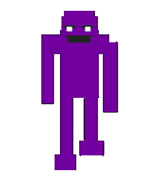

Personajes principales de la saga

1Michael Afton
Michael Afton es el principal protagonista de la saga de Five Nights At Freddy's, siendo este el que controlamos a través del primer, tercer, quinto y sexto juego. Es atacado por los animatrónicos al creer que él es su asesino, confunsion creada por su vínculo familiar con el mismo, ya que este es su propio padre, William Afton. Su historia es compleja y llena de incógnitas que se irán desvelando a través de los juegos.
2William Afton
Padre de Michael Afton y asesino de todas las almas de los niños que se encuentran en los animatrónicos, es uno de los creadores de los restaurantes de Freddy's junto a su amigo Henry Emily. Tiene una gran inteligencia, lo que le permite escapar por muchos años de sus víctimas, sin embargo, termina siendo acorralado y atrapado en el mismo traje de animatrónico que usaba para asesinar a los niños, convirtiéndose en el principal animatrónico que entrentaremos en la tercera entrega de Five Nights At Freddy's.
3Crying Child
Este niño es el protagonista del cuarto juego de la saga, conocido por ser el que más miedo causó a los jugadores. Se sabe poco respecto a este personaje, sin embargo es seguro que es el hijo menor de William Afton y hermano de Michael, quien le asustará durante los diversos minijuegos de Five Nights At Freddy's 4, llevándole hasta su final.
Animatrónicos
Hay que aclarar que existen muchos más animatrónicos, pero aquí se presentarán los 4 principales que se repiten a lo largo de los juegos
Freddy
Freddy
Toy Freddy
Nightmare Freddy
Funtime Freddy
Bonnie
Bonnie
Toy Bonnie
Nightmare Bonnie
Bonbon
Chica
Chica
Toy Chica
Withered Chica
Nightmare Chica
Foxy
Foxy
Withered Foxy
Nightmare Foxy
Funtime Foxy